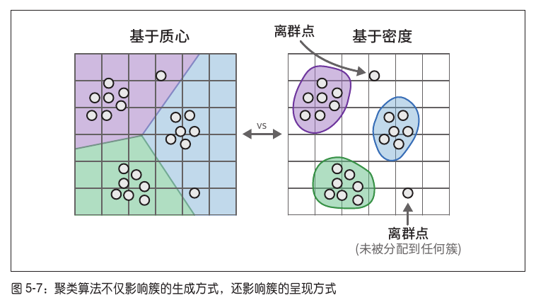

HDBSCAN 文本聚类与结果检查
《图解大模型：生成式 AI 原理与实战》｜5.2.3 对降维后的嵌入向量进行聚类 · 5.2.4 检查生成的簇
原书第119–122页 · 图5-6、图5-7、图5-8 · 建议35–45分钟%7D%3C%2Fstyle%3E%3Cmarker%20id%3D%22arrow%22%20markerWidth%3D%2210%22%20markerHeight%3D%2210%22%20refX%3D%228%22%20refY%3D%223%22%20orient%3D%22auto%22%3E%3Cpath%20d%3D%22M0%200L8%203L0%206%22%20fill%3D%22%2394a3b8%22%2F%3E%3C%2Fmarker%3E%3C%2Fdefs%3E%3Crect%20width%3D%22940%22%20height%3D%22338%22%20fill%3D%22%23fbfdff%22%2F%3E%0A%3Ctext%20class%3D%22h%22%20x%3D%2225%22%20y%3D%2237%22%3E%E4%B8%BA%E4%BB%80%E4%B9%88%20K-means%20%E4%B8%8E%20HDBSCAN%20%E7%9A%84%E8%81%9A%E7%B1%BB%E7%BB%93%E6%9E%9C%E4%B8%8D%E5%90%8C%EF%BC%9F%3C%2Ftext%3E%0A%3Crect%20x%3D%2225%22%20y%3D%2263%22%20width%3D%22426%22%20height%3D%22240%22%20rx%3D%2216%22%20fill%3D%22%23f8fafc%22%20stroke%3D%22%23cbd5e1%22%2F%3E%3Ctext%20class%3D%22t%22%20x%3D%2245%22%20y%3D%2291%22%20font-weight%3D%22bold%22%3EK-means%EF%BC%9A%E9%80%9A%E5%B8%B8%E6%AF%8F%E4%B8%AA%E7%82%B9%E9%83%BD%E6%9C%89%E5%BD%92%E5%B1%9E%3C%2Ftext%3E%0A%3Crect%20x%3D%22488%22%20y%3D%2263%22%20width%3D%22426%22%20height%3D%22240%22%20rx%3D%2216%22%20fill%3D%22%23f8fafc%22%20stroke%3D%22%23cbd5e1%22%2F%3E%3Ctext%20class%3D%22t%22%20x%3D%22508%22%20y%3D%2291%22%20font-weight%3D%22bold%22%3EHDBSCAN%EF%BC%9A%E5%8F%AF%E4%BB%A5%E4%BF%9D%E7%95%99%E7%A6%BB%E7%BE%A4%E7%82%B9%3C%2Ftext%3E%0A%3Ccircle%20cx%3D%22125.0%22%20cy%3D%22228.0%22%20r%3D%225%22%20fill%3D%22%2360a5fa%22%2F%3E%3Ccircle%20cx%3D%22168.0%22%20cy%3D%22194.4%22%20r%3D%225%22%20fill%3D%22%2360a5fa%22%2F%3E%3Ccircle%20cx%3D%22183.9%22%20cy%3D%22140.6%22%20r%3D%225%22%20fill%3D%22%2360a5fa%22%2F%3E%3Ccircle%20cx%3D%22162.6%22%20cy%3D%22142.0%22%20r%3D%225%22%20fill%3D%22%2360a5fa%22%2F%3E%3Ccircle%20cx%3D%22117.6%22%20cy%3D%22196.6%22%20r%3D%225%22%20fill%3D%22%2360a5fa%22%2F%3E%3Ccircle%20cx%3D%2277.3%22%20cy%3D%22227.9%22%20r%3D%225%22%20fill%3D%22%2360a5fa%22%2F%3E%3Ccircle%20cx%3D%2267.0%22%20cy%3D%22192.1%22%20r%3D%225%22%20fill%3D%22%2360a5fa%22%2F%3E%3Ccircle%20cx%3D%2293.4%22%20cy%3D%22139.3%22%20r%3D%225%22%20fill%3D%22%2360a5fa%22%2F%3E%3Ccircle%20cx%3D%22139.7%22%20cy%3D%22143.5%22%20r%3D%225%22%20fill%3D%22%2360a5fa%22%2F%3E%3Ccircle%20cx%3D%22176.7%22%20cy%3D%22198.8%22%20r%3D%225%22%20fill%3D%22%2360a5fa%22%2F%3E%3Ccircle%20cx%3D%22181.1%22%20cy%3D%22227.8%22%20r%3D%225%22%20fill%3D%22%2360a5fa%22%2F%3E%3Ccircle%20cx%3D%22150.1%22%20cy%3D%22189.9%22%20r%3D%225%22%20fill%3D%22%2360a5fa%22%2F%3E%3Ccircle%20cx%3D%22103.3%22%20cy%3D%22138.1%22%20r%3D%225%22%20fill%3D%22%2360a5fa%22%2F%3E%3Ccircle%20cx%3D%2270.1%22%20cy%3D%22145.0%22%20r%3D%225%22%20fill%3D%22%2360a5fa%22%2F%3E%3Ccircle%20cx%3D%2271.6%22%20cy%3D%22200.9%22%20r%3D%225%22%20fill%3D%22%2360a5fa%22%2F%3E%3Ccircle%20cx%3D%22106.8%22%20cy%3D%22227.5%22%20r%3D%225%22%20fill%3D%22%2360a5fa%22%2F%3E%3Ccircle%20cx%3D%22153.4%22%20cy%3D%22187.6%22%20r%3D%225%22%20fill%3D%22%2360a5fa%22%2F%3E%3Ccircle%20cx%3D%22357.1%22%20cy%3D%22140.1%22%20r%3D%225%22%20fill%3D%22%2334d399%22%2F%3E%3Ccircle%20cx%3D%22349.8%22%20cy%3D%22149.7%22%20r%3D%225%22%20fill%3D%22%2334d399%22%2F%3E%3Ccircle%20cx%3D%22311.1%22%20cy%3D%22206.0%22%20r%3D%225%22%20fill%3D%22%2334d399%22%2F%3E%3Ccircle%20cx%3D%22265.3%22%20cy%3D%22230.1%22%20r%3D%225%22%20fill%3D%22%2334d399%22%2F%3E%3Ccircle%20cx%3D%22241.5%22%20cy%3D%22188.3%22%20r%3D%225%22%20fill%3D%22%2334d399%22%2F%3E%3Ccircle%20cx%3D%22254.5%22%20cy%3D%22139.1%22%20r%3D%225%22%20fill%3D%22%2334d399%22%2F%3E%3Ccircle%20cx%3D%22296.3%22%20cy%3D%22151.4%22%20r%3D%225%22%20fill%3D%22%2334d399%22%2F%3E%3Ccircle%20cx%3D%22340.4%22%20cy%3D%22208.0%22%20r%3D%225%22%20fill%3D%22%2334d399%22%2F%3E%3Ccircle%20cx%3D%22359.0%22%20cy%3D%22229.6%22%20r%3D%225%22%20fill%3D%22%2334d399%22%2F%3E%3Ccircle%20cx%3D%22340.4%22%20cy%3D%22185.9%22%20r%3D%225%22%20fill%3D%22%2334d399%22%2F%3E%3Ccircle%20cx%3D%22296.3%22%20cy%3D%22138.2%22%20r%3D%225%22%20fill%3D%22%2334d399%22%2F%3E%3Ccircle%20cx%3D%22254.5%22%20cy%3D%22153.2%22%20r%3D%225%22%20fill%3D%22%2334d399%22%2F%3E%3Ccircle%20cx%3D%22241.5%22%20cy%3D%22210.0%22%20r%3D%225%22%20fill%3D%22%2334d399%22%2F%3E%3Ccircle%20cx%3D%22265.3%22%20cy%3D%22229.0%22%20r%3D%225%22%20fill%3D%22%2334d399%22%2F%3E%3Ccircle%20cx%3D%22311.1%22%20cy%3D%22183.6%22%20r%3D%225%22%20fill%3D%22%2334d399%22%2F%3E%3Ccircle%20cx%3D%22349.8%22%20cy%3D%22137.4%22%20r%3D%225%22%20fill%3D%22%2334d399%22%2F%3E%3Ccircle%20cx%3D%22357.1%22%20cy%3D%22155.1%22%20r%3D%225%22%20fill%3D%22%2334d399%22%2F%3E%3Ccircle%20cx%3D%22328.4%22%20cy%3D%22211.9%22%20r%3D%225%22%20fill%3D%22%2334d399%22%2F%3E%0A%3Ccircle%20cx%3D%22220%22%20cy%3D%22270%22%20r%3D%226%22%20fill%3D%22%2360a5fa%22%2F%3E%3Ctext%20class%3D%22s%22%20x%3D%2246%22%20y%3D%22295%22%3E%E8%BE%B9%E7%BC%98%E7%82%B9%E4%B9%9F%E8%A2%AB%E5%88%86%E5%88%B0%E6%9F%90%E4%B8%80%E7%B0%87%3C%2Ftext%3E%0A%3Ccircle%20cx%3D%22590.0%22%20cy%3D%22228.0%22%20r%3D%225%22%20fill%3D%22%2360a5fa%22%2F%3E%3Ccircle%20cx%3D%22633.0%22%20cy%3D%22194.4%22%20r%3D%225%22%20fill%3D%22%2360a5fa%22%2F%3E%3Ccircle%20cx%3D%22648.9%22%20cy%3D%22140.6%22%20r%3D%225%22%20fill%3D%22%2360a5fa%22%2F%3E%3Ccircle%20cx%3D%22627.6%22%20cy%3D%22142.0%22%20r%3D%225%22%20fill%3D%22%2360a5fa%22%2F%3E%3Ccircle%20cx%3D%22582.6%22%20cy%3D%22196.6%22%20r%3D%225%22%20fill%3D%22%2360a5fa%22%2F%3E%3Ccircle%20cx%3D%22542.3%22%20cy%3D%22227.9%22%20r%3D%225%22%20fill%3D%22%2360a5fa%22%2F%3E%3Ccircle%20cx%3D%22532.0%22%20cy%3D%22192.1%22%20r%3D%225%22%20fill%3D%22%2360a5fa%22%2F%3E%3Ccircle%20cx%3D%22558.4%22%20cy%3D%22139.3%22%20r%3D%225%22%20fill%3D%22%2360a5fa%22%2F%3E%3Ccircle%20cx%3D%22604.7%22%20cy%3D%22143.5%22%20r%3D%225%22%20fill%3D%22%2360a5fa%22%2F%3E%3Ccircle%20cx%3D%22641.7%22%20cy%3D%22198.8%22%20r%3D%225%22%20fill%3D%22%2360a5fa%22%2F%3E%3Ccircle%20cx%3D%22646.1%22%20cy%3D%22227.8%22%20r%3D%225%22%20fill%3D%22%2360a5fa%22%2F%3E%3Ccircle%20cx%3D%22615.1%22%20cy%3D%22189.9%22%20r%3D%225%22%20fill%3D%22%2360a5fa%22%2F%3E%3Ccircle%20cx%3D%22568.3%22%20cy%3D%22138.1%22%20r%3D%225%22%20fill%3D%22%2360a5fa%22%2F%3E%3Ccircle%20cx%3D%22535.1%22%20cy%3D%22145.0%22%20r%3D%225%22%20fill%3D%22%2360a5fa%22%2F%3E%3Ccircle%20cx%3D%22536.6%22%20cy%3D%22200.9%22%20r%3D%225%22%20fill%3D%22%2360a5fa%22%2F%3E%3Ccircle%20cx%3D%22571.8%22%20cy%3D%22227.5%22%20r%3D%225%22%20fill%3D%22%2360a5fa%22%2F%3E%3Ccircle%20cx%3D%22618.4%22%20cy%3D%22187.6%22%20r%3D%225%22%20fill%3D%22%2360a5fa%22%2F%3E%3Ccircle%20cx%3D%22824.1%22%20cy%3D%22140.1%22%20r%3D%225%22%20fill%3D%22%2334d399%22%2F%3E%3Ccircle%20cx%3D%22816.8%22%20cy%3D%22149.7%22%20r%3D%225%22%20fill%3D%22%2334d399%22%2F%3E%3Ccircle%20cx%3D%22778.1%22%20cy%3D%22206.0%22%20r%3D%225%22%20fill%3D%22%2334d399%22%2F%3E%3Ccircle%20cx%3D%22732.3%22%20cy%3D%22230.1%22%20r%3D%225%22%20fill%3D%22%2334d399%22%2F%3E%3Ccircle%20cx%3D%22708.5%22%20cy%3D%22188.3%22%20r%3D%225%22%20fill%3D%22%2334d399%22%2F%3E%3Ccircle%20cx%3D%22721.5%22%20cy%3D%22139.1%22%20r%3D%225%22%20fill%3D%22%2334d399%22%2F%3E%3Ccircle%20cx%3D%22763.3%22%20cy%3D%22151.4%22%20r%3D%225%22%20fill%3D%22%2334d399%22%2F%3E%3Ccircle%20cx%3D%22807.4%22%20cy%3D%22208.0%22%20r%3D%225%22%20fill%3D%22%2334d399%22%2F%3E%3Ccircle%20cx%3D%22826.0%22%20cy%3D%22229.6%22%20r%3D%225%22%20fill%3D%22%2334d399%22%2F%3E%3Ccircle%20cx%3D%22807.4%22%20cy%3D%22185.9%22%20r%3D%225%22%20fill%3D%22%2334d399%22%2F%3E%3Ccircle%20cx%3D%22763.3%22%20cy%3D%22138.2%22%20r%3D%225%22%20fill%3D%22%2334d399%22%2F%3E%3Ccircle%20cx%3D%22721.5%22%20cy%3D%22153.2%22%20r%3D%225%22%20fill%3D%22%2334d399%22%2F%3E%3Ccircle%20cx%3D%22708.5%22%20cy%3D%22210.0%22%20r%3D%225%22%20fill%3D%22%2334d399%22%2F%3E%3Ccircle%20cx%3D%22732.3%22%20cy%3D%22229.0%22%20r%3D%225%22%20fill%3D%22%2334d399%22%2F%3E%3Ccircle%20cx%3D%22778.1%22%20cy%3D%22183.6%22%20r%3D%225%22%20fill%3D%22%2334d399%22%2F%3E%3Ccircle%20cx%3D%22816.8%22%20cy%3D%22137.4%22%20r%3D%225%22%20fill%3D%22%2334d399%22%2F%3E%3Ccircle%20cx%3D%22824.1%22%20cy%3D%22155.1%22%20r%3D%225%22%20fill%3D%22%2334d399%22%2F%3E%3Ccircle%20cx%3D%22795.4%22%20cy%3D%22211.9%22%20r%3D%225%22%20fill%3D%22%2334d399%22%2F%3E%0A%3Ccircle%20cx%3D%22688%22%20cy%3D%22274%22%20r%3D%226%22%20fill%3D%22%239ca3af%22%2F%3E%3Ctext%20class%3D%22s%22%20x%3D%22704%22%20y%3D%22281%22%3E-1%20%E7%A6%BB%E7%BE%A4%E7%82%B9%3C%2Ftext%3E%0A%3Ctext%20class%3D%22s%22%20x%3D%2228%22%20y%3D%22326%22%3E%E7%82%B9%E4%BD%8D%E4%B8%BA%E6%95%99%E5%AD%A6%E7%A4%BA%E6%84%8F%EF%BC%8C%E9%9D%9E%E6%95%99%E6%9D%90%E5%AE%9E%E9%AA%8C%E8%81%9A%E7%B1%BB%E5%9D%90%E6%A0%87%E3%80%82%3C%2Ftext%3E%3C%2Fsvg%3E)
01｜今天学习什么？
前两天我们已经得到了 embeddings（44,949 × 384）和降维后的 reduced_embeddings（44,949 × 5）。今天的任务是：根据这些5维向量分组，然后核查每组包含哪些文章。
gte-small
UMAP
HDBSCAN
检查簇
02｜为什么选择 HDBSCAN，而不是 K-means？
原书第119页比较了两类算法。K-means 是一种基于质心的聚类算法，通常要求事先指定 k，即希望得到多少个簇。但我们不清楚 44,949 篇 NLP 文章中究竟存在多少个主题。HDBSCAN 依据数据的密度结构发现簇，不需要预先指定最终簇的数量。
| 比较 | K-means | HDBSCAN |
|---|---|---|
| 聚类依据 | 点与质心的距离 | 空间中的密度结构 |
| 预设簇数量 | 通常需要指定 k | 不需要指定最终簇数量 |
| 离群点 | 普通 K-means 仍会分配给某一簇 | 允许不归属于任何簇 |
图5-7中的关键区别，是是否允许某个点作为离群点（outlier）保留下来，而不是被强行归类。

怎么读图 5-7？
两幅图画的是同一批点，每个圆点可以看成一篇论文。图对比的是两类聚类规则，本节用 K-means 和 HDBSCAN 分别作为例子。
- 左图：基于质心。 如果用 K-means 并设
k=3，算法会找出三个质心，每个点归给最近的质心。背景的三种颜色表示三个质心各自负责的区域。上方和右下角的两个孤立点也落在某个颜色区域里，因此都有归属。 - 右图：基于密度。 颜色圈出的是点扎堆形成的簇。看同样两个孤立点：它们周围的点不够密集，图中把它们留在簇外。在本节 HDBSCAN 的输出里，这类未分配到簇的点用
-1表示。
图里左右都画了三组。以本节的算法为例，左边的组数由 k 预先指定，右边的组数由点的密度结构和聚类参数共同决定。
03｜用一个直观例子理解密度聚类
假设我们把论文向量画在平面上：一堆论文讨论机器翻译，一堆讨论语音识别，还有少量论文研究非常小众的问题。
如果某些向量在局部空间形成足够密集的群体，HDBSCAN 就可以把它们组织为一个簇；而那些没有稳定形成密集群体的点，可能标记为 -1。
-1 并不等于“错误论文”，只表示聚类算法没有把它可靠地归入某个簇。在学术数据中，小众研究领域可能恰恰是有价值的信息。04｜原书 HDBSCAN 代码逐行讲解
from hdbscan import HDBSCAN
# 拟合模型并提取簇
hdbscan_model = HDBSCAN(
min_cluster_size=50,
metric="euclidean",
cluster_selection_method="eom"
).fit(reduced_embeddings)
clusters = hdbscan_model.labels_
# 我们生成了多少个簇？
len(set(clusters))
# 书中结果：156| 部分 | 作用 |
|---|---|
HDBSCAN(...) | 创建密度聚类模型并设置参数 |
min_cluster_size=50 | 设定最小簇规模为50；书中说明减小它通常能得到更多簇 |
metric="euclidean" | 使用欧氏距离计算降维空间中的距离 |
cluster_selection_method="eom" | 使用 EOM 方式从层次聚类结构中选择簇；本节没有展开其内部推导 |
.fit(reduced_embeddings) | 使用降维后的向量拟合聚类模型 |
.labels_ | 获取每篇论文对应的簇标签，例如0、1、2或-1 |
len(set(clusters)) | 计算不同标签的数量，书中输出156 |
156 称作“156个簇”。但该表达式统计的是不同标签数量，如果出现离群点标签 -1，它也会被统计在内。严格计算有效簇数量可以写：len(set(clusters) - {-1})。这属于对书中代码统计含义的补充辨析。05｜为什么降维用 cosine，聚类又用 euclidean？
注意两段代码中的 metric 处在不同算法里：
# Day 4：在原始384维向量上学习降维映射
UMAP(n_components=5, metric="cosine", ...)
# Day 5：在降维后的5维向量上执行聚类
HDBSCAN(metric="euclidean", ...)因此不是同一批原始向量先用余弦距离聚类、再用欧氏距离聚类。UMAP 的度量用于构造降维映射；HDBSCAN 的度量用于降维空间中的聚类。
两种距离度量能否组合使用、哪种组合最好，需要结合数据和实验检验。本书在这里直接采用上述参数，没有证明它们对所有数据集都最优。
06｜5.2.4 检查生成的簇：簇0在讨论什么？
模型给出簇标签后，数字 0、1 并不会直接告诉我们具体主题是什么。原书因此从簇0中取出前三篇论文的摘要进行人工检查。
import numpy as np
# 打印簇0中的前三个文档
cluster = 0
for index in np.where(clusters == cluster)[0][:3]:
print(abstracts[index][:300] + "... \\n")clusters == cluster：判断哪些位置的簇标签等于0；np.where(...)[0]：取这些位置的索引；[:3]：取前三个索引；abstracts[index][:300]：只看对应摘要的前300个字符。
书中示例显示，这几篇摘要主要涉及美国手语（ASL）翻译、手势语言以及相关翻译系统。因此我们可以暂时把这个簇理解成“手语相关论文簇”。
[:3] 实际只是取前三个匹配结果，并没有执行随机采样。此处保留原书代码的实际行为。07｜用二维散点图查看聚类结果
原书第121页为了画图，再次使用 UMAP，把原始384维嵌入向量降到2维。这一步是为了可视化，不是重新训练 HDBSCAN。
import pandas as pd
reduced_embeddings = UMAP(
n_components=2,
min_dist=0.0,
metric="cosine",
random_state=42
).fit_transform(embeddings)
df = pd.DataFrame(reduced_embeddings, columns=["x", "y"])
df["title"] = titles
df["cluster"] = [str(c) for c in clusters]
clusters_df = df.loc[df.cluster != "-1", :]
outliers_df = df.loc[df.cluster == "-1", :]书中随后用 matplotlib 绘图：把离群点显示为灰色，把已分配到簇的点按簇标签着色。
import matplotlib.pyplot as plt
plt.scatter(outliers_df.x, outliers_df.y,
alpha=0.05, s=2, c="grey")
plt.scatter(
clusters_df.x, clusters_df.y,
c=clusters_df.cluster.astype(int),
alpha=0.6, s=2, cmap="tab20b"
)
plt.axis("off")08｜从聚类转向主题建模
完成聚类后，我们已经知道哪些文档在一起；接下来的问题是：如何用关键词解释每一组文档在谈论什么？
原书第122页开始介绍主题建模。以“手语”簇为例，主题建模尝试输出“手势”“语言”“翻译”之类有代表性的关键词，而不是仅给一个无法解释的簇编号。这就是 Day 6 的学习方向。
09｜自测题（点击展开答案）
1. 为什么此处优先考虑 HDBSCAN 而不是 K-means？
主要因为事先不知道应该生成多少个簇，而且希望允许有些论文成为离群点。HDBSCAN不需要预先指定最终簇数量。
2. clusters 中的每个值代表什么？
代表与该位置对应的论文的簇标签。普通数值是簇编号，-1通常表示离群点。
3. min_cluster_size=50 是什么意思？
设定算法的最小簇规模参数为50。书中指出减小它通常可得到更多簇。
4. 为什么绘图前要从384维再降到2维？
这是为了把文档显示在x-y二维平面上；此前5维降维用于聚类。两次降维目的不同。
5. 为什么颜色相同不能证明属于同一簇？
原书示例中簇数多、调色板颜色有限，因此绘图库会循环使用颜色。
一、看图理解 HDBSCAN 为什么能识别离群点
K-means是基于质心的算法，需要事先给出想要的簇数量。假设指定 k=3，那么普通K-means会把每个点分配给这三个簇之一。HDBSCAN从局部密度结构出发，不需要你先指定具体的簇数，也能把不容易归组的点设为 -1。
二、训练HDBSCAN时，输入输出是什么？
书中的 clusters = hdbscan_model.labels_ 输出的是每篇论文的标签，长度与输入论文数量一致。这里 -1 是离群点标志，其余整数只是簇编号，并不是自然语言主题名。
三、HDBSCAN三个参数再解释
min_cluster_size=50 设定簇的最小规模。减小它可能发现更多较小簇，但不是保证簇数必定增加；metric="euclidean" 表示降维后空间中的欧氏距离；cluster_selection_method="eom" 是从层次密度聚类结构中选择最终簇的方法。
本节书中给出了 len(set(clusters)) = 156。代码的直接含义是“有156种不同的标签”，若存在 -1 就应把它扣除才能计算不含离群点的有效簇数：
all_labels = set(clusters)
valid_labels = all_labels - {-1}
n_clusters = len(valid_labels)四、如何确定一组文档讨论什么？
书中使用 np.where(clusters == 0)[0][:3] 找到簇0中的前三篇摘要，发现它们与手语翻译、手语识别等内容有关。注意，这段代码没有随机打乱操作，所以其实是取前三篇匹配结果，不是随机采样。
五、为什么还要生成二维散点图？
前面HDBSCAN在5维空间运行，而人类无法直接画出5维散点图。因此书中另外使用 UMAP(n_components=2) 将原始384维向量映射到x-y二维平面，并按聚类标签上色。这个绘图用的二维坐标不是重新进行一次HDBSCAN聚类的必需输入。
六、铺垫Day6：聚类后为什么还需要BERTopic？
这一节最终只能告诉我们“论文A和论文B属于簇0”，无法自动回答“簇0最重要的研究主题是什么”。Day6会使用词袋统计和c-TF-IDF，将这些簇转换成可读的主题关键词。
自测：如果簇0里都是手语翻译论文，算法为什么不会自动把簇0改名为“手语”？
HDBSCAN主要操作数值向量和簇标签，它不会自动从原始文本中生成可解释的主题描述。主题表示需要另外一套关键词提取或生成机制。
本页批注
选中原文后，左键选择「高亮」或「添加批注」。高亮只显示背景色，批注显示下划线，点击对应位置即可查看批注；不会改变正文HTML结构。